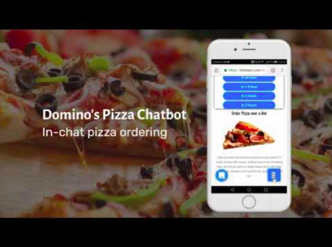

Você já conhece a Iniciativa Chatbots? Entenda mais sobre o que são e como podem otimizar o relacionamento com o cliente
Chatbots não são super heróis da Marvel, mas podem defender com sucesso o seu negócio!
Os chatbots Consistem em uma ferramenta que possibilita à sua empresa realizar um atendimento 24horas, viabilizando a automação, otimização e maior eficiência da sua comunicação e relacionamento com o cliente.
Manter um relacionamento de qualidade, eficaz e ágil com o cliente não é tarefa fácil! Seu cliente deseja informações e soluções a qualquer hora do dia, e estar preparado para atendê-lo a qualquer tempo é fundamental para a expansão dos seus negócios.
Já falamos aqui no blog sobre a importância da otimização na comunicação com o cliente, e como esse aprimoramento pode, literalmente, definir seus resultados e, consequentemente, sua receita.
A gestão de relacionamento com o cliente envolve uma série de práticas, que você pode conhecer melhor baixando o nosso material 5 dicas para não perder seus clientes em 2020 [preencha o formulário e baixe gratuitamente! ].
Dentre essas práticas, assegurar que seus canais de atendimento sejam efetivos é fundamental, e é aí que entra o chatbot!
Os chatbots vieram para redefinir as possibilidades de relacionamento entre cliente e empresa, uma vez que são muito mais que apenas robôs que conversam com as pessoas em um chat, sendo capazes de absorver parte do volume de interações e trazendo tanto ao cliente, quanto à empresa, uma solução de valor inestimável: a otimização do tempo.
Parece até coisa de filme, mas não é, e está ao alcance de profissionais autônomos, microempreendedores, pequenas e grandes empresas.
Se você chegou até aqui, esse assunto te interessa e você deve estar se perguntando: como, afinal de contas, o chatbot pode otimizar o atendimento ao meu cliente? Continue essa leitura e a gente já te conta!
O que é um chatbot?
Definitivamente, não são robôs como os dos filmes!
Como o próprio nome já sugere, são robôs que conversam através do chat. São softwares desenvolvidos para o atendimento no seu site, WhatsApp empresarial, Facebook, dentre outras possibilidades, que respondem seus clientes e estão disponíveis 24h por dia.
Seu cliente pode ter dúvidas sobre serviços prestados, solicitar um orçamento, realizar uma compra, deixar um feedback dentre outras demandas e obter uma resposta rápida e a qualquer momento.
É isso mesmo! Seu cliente pode ser atendido a qualquer horário sem a necessidade de um atendimento humano online, o que gera economia e lucro para a empresa, já que, com essa ferramenta, você pode expandir seu horário de atendimento e tornar sua comunicação mais veloz e eficiente.
Além disso, com a super ajuda do chatbot, as demandas de baixa e média complexidade podem ser descentralizadas do colaborador responsável por essa tarefa, tornando-o necessário apenas em ocasiões específicas em que o chatbot não consegue resolver.
Dessa forma, seu time de comunicação (ou você mesmo, caso seja o único responsável), pode focar nas demandas mais importantes.
Os chatbots se dividem em duas categorias principais:
1 - Aqueles que funcionam a partir de uma programação que utiliza comandos, possibilitando-os responder perguntas e dar orientações à partir de respostas pré-configuradas contidas no banco de dados;
2 - Aqueles que utilizam inteligência artificial e, à medida que vão interagindo com mais pessoas, são capazes de aprender.
São como o atendimento automático dos call centers, onde o cliente pode digitar 1 para informações, 2 para dar um feedback, 3 para adquirir um produto, e assim sucessivamente.
O grande diferencial do chatbot em relação ao atendimento robotizado normalmente utilizado é que, como já mencionamos, são capazes de, à medida em que interagem com usuários, absorver informações dos atendimentos prestados e incluí-los no banco de dados.
O chatbot é capaz de substituir o atendimento humano?
O chatbot é capaz de simular a interação humana, mão NÃO substitui o atendimento humano.
Ele deve consistir em uma ferramenta que contribua e complemente a sua estratégia de otimização no relacionamento com o cliente, mas não deve ser a estratégia em si. Utilize com moderação! Ninguém gosta de ser atendido exclusivamente por um robô.
O ideal é tornar o atendimento cada vez mais humanizado e H2H (Human to Human), contando com o chatbot como um aliado, não como o carro chefe da sua estratégia.
Para saber mais sobre atendimento humanizado e Marketing H2H (Human to Human), baixe o nosso material gratuito.
Na prática, como otimizam o atendimento?
Sua empresa com certeza recebe diversas demandas frequentes dos seus clientes, como:
1 - Dúvidas sobre seu horário de atendimento;
2 - Os produtos que sua empresa oferece;
3 - Feedbacks sobre serviços prestados;
4 - Compra de produtos;
5 - Outras ações diversas;
Apesar de chatbots mais desenvolvidos possuírem a capacidade de Learn Machine (aprendizado da máquina), seu cliente poderá ter uma dúvida ou demanda que o seu amigo robô não será capaz de absorver, o que fará com que seja necessária a intervenção de um atendimento humano.
Mas pense bem: se seu cliente tirar grande parte das dúvidas com o auxílio do seu chatbot, a intervenção de atendimento humano será apenas complementar, bem mais rápida e focada, não sendo necessária a utilização do tempo para tirar dúvidas menores que já foram esclarecidas, concorda?
TEMPO É DINHEIRO! ;)
Quais são os tipos de chatbot?
Abaixo, listamos os 5 tipos de chatbot existentes.
Entenda como cada um funciona e comece a pensar na sua estratégia de otimização do atendimento ao cliente!
#01 Otimizadores
Todo chatbot é, por natureza, um otimizador. Mas nesse caso, a função principal é tornar mais fácil a experiência do usuário.
Se a demanda for comprar um produto e obter uma informação, por exemplo, esse chatbot é capaz de oferecer maior eficiência que aplicativos e websites tradicionais.
A Domino’s Pizza lançou um chatbot otimizador para atendimento de seus clientes no Facebook Messenger, que permite que seus clientes realizem pedidos de maneira fácil e automatizada.
Veja:
#02 Escudos
São eles que atuam no front do atendimento, recebendo reclamações e esclarecendo as dúvidas frequentes do seu público.
São considerados uma subcategoria dos otimizadores, e sua função é prevenir situações complicadas que seriam mais complicadas de ser resolvidas por telefone, por exemplo.
Digamos que sua empresa oferece serviço de e-commerce, neste caso, o chatbot poderia lidar com as devoluções e feedbacks negativos sobre produtos, por exemplo.
#03 Conversacionais
Como o próprio nome já sugere, são robôs criados para conversar. Aqui no Brasil, o mais famoso é o Robô Ed, que foi sensação há alguns anos atrás.
O objetivo de sua criação era criar uma inteligência artificial capaz de interagir de maneira ampla com os usuários, como se fosse uma pessoa de verdade.
Esse bot é capaz de entreter, responder perguntas e educar o público acerca de assuntos como o uso coerente do petróleo, economia de energia e cuidados com o meio ambiente.
Esse tipo de chatbot pode ser utilizado para “trazer à vida” o seu mascote com o objetivo de criar ainda mais engajamento com o seu público nas redes sociais!
#04 Proativos
São, literalmente, proativos, se apresentando ao cliente e mandando uma mensagem antes mesmo que ele recorra a esta ferramenta ao utilizar seu site.
São programados para iniciar uma conversa com o usuário sempre que perceber alguma dificuldade ou dúvida, enviando mensagens com sugestões sobre como resolver o problema.
Podem também encaminhar mensagens sobre descontos e promoções e, caso seu cliente esteja passando próximo à sua loja, ele é capaz de encaminhar uma mensagem alertando sobre alguma oferta exclusiva.
Esse bot em específico deve ser utilizado com MUITA cautela para que não seja invasivo e acabe por prejudicar sua relação com o cliente.
#05 Sociais
Por último, mas COM CERTEZA não menos importante, finalizamos nossa lista com os chatbots sociais.
São utilizados por empresas que desejam estimular um maior engajamento com seus clientes. Com ele é possível receber feedbacks, consultar a opinião e até mesmo criar enquetes e realizar pesquisas sobre algum assunto com o seu público.
A habilidade desse chatbot pode ser um diferencial competitivo muito importante para o seu negócio ;)